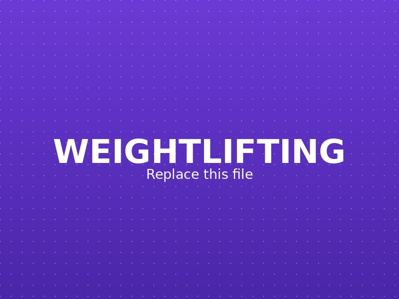
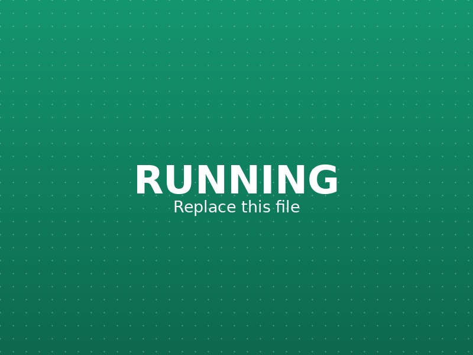
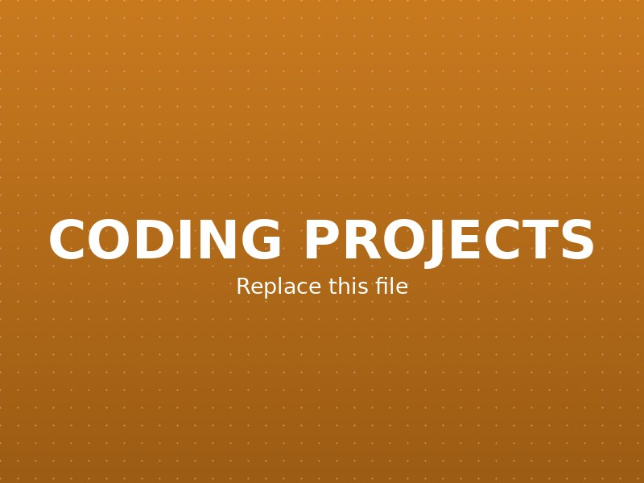

Hobbies
What I do when I'm not writing code

Weightlifting
Regular time in the weight room — progress is measurable, and there's no shortcut around consistent reps.

Running
Miles on the road as a reset between problem sets and pull requests, and a different kind of discipline.

Coding Projects
Hackathons and weekend builds outside of coursework and work, usually an excuse to try a new tool or API.